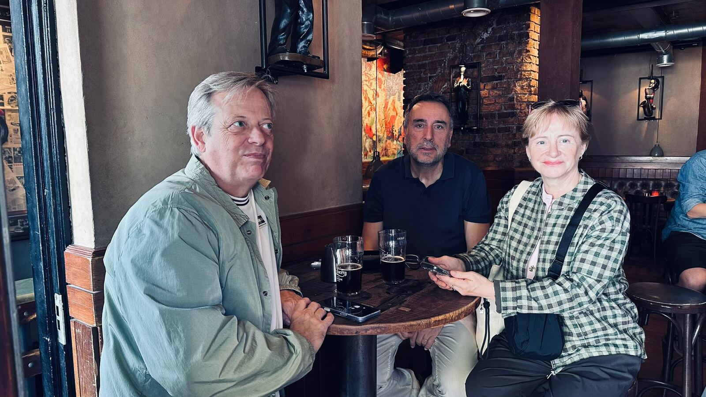
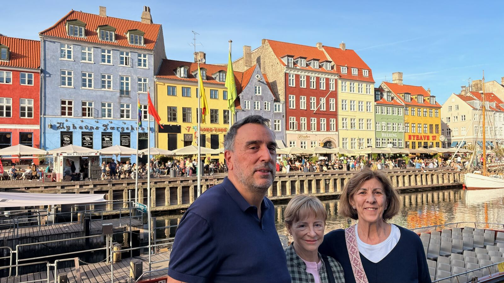
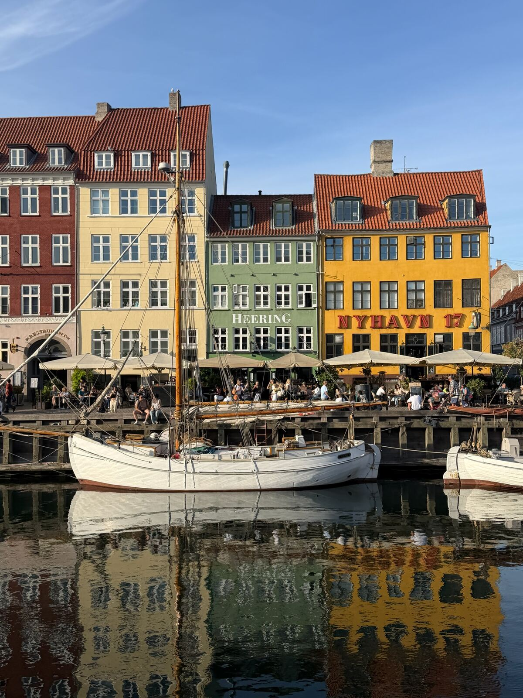
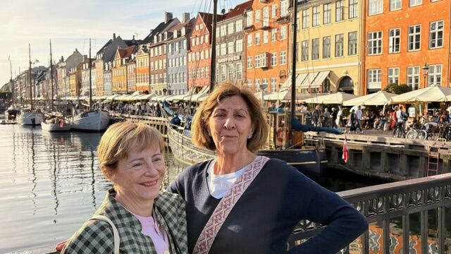

La ciutat que obre i tanca el viatge: primera nit just arribar, una altra volta després d'anar a Malmö l'endemà, i últim dia abans d'agafar l'avió de tornada. Copenhaguen d'aperitiu i de sobretaula.

Una cervesa va bastar per decidir apuntar-nos al viatge a l'Argentina, però en business, of course.

Nyhavn, el canal de les cases de colors.

Nyhavn, tercera entrega, sense vaixell propi però amb photo call gratuït.

Nyhavn una altra vegada, perquè una foto mai no n'hi ha prou.